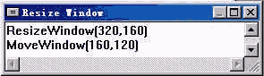

|
|
| 当前位置：电脑报电子版 > 1999 年 > 43 期 > OA专刊 > 如何在Authorware中播放GIF动画 |
| 《 如何在Authorware中播放GIF动画 》 |
| Authorware的电影图标并不支持gif动画的播放，给使用者带来诸多不便。其实，只需调用相应的多媒体扩展函数就可以了，具体步骤如下。 1．在流程线上放置一个“运算”图标，并命名为“Resize Windows”，其设置如图所示。 2．在流程线上放置一个“显示”图标，命名为“Background”。双击打开，输入文字“循环播放gif动画”。 3．加载多媒体扩展函数。控制gif动画播放的函数放在一个DLL动态文件Animgifu32中，程序调用之前必须加载这些函数。从菜单上选取“Windows>Functions”选项或单击工具栏上的“Functions Window”按钮，进入“Functions”对话框。 4．从“Category”区的下拉列表中选定本程序文件gifbfa4p选项。 5．单击“Functions”对话框中下面的“Load”按钮，进入“Load Function”对话框。选定“Animgifu32”文件，单击“打开”按钮，弹出“Custom functions in Animgifu32”对话框。用鼠标选取所有函数（共三个），单击“Load”加载，加载完毕后返回至与“Functions”同名的另一个对话框，这时，在函数的显示窗口中增加了加载的多媒体扩展函数，单击任一个函数即可查看相应的使用说明。在后面的流程中即可调用已加载的多媒体扩展函数。 6．在流程线上放置一个“交互作用”图标，命名为“Gif－control”。 7．在“Gif－control”的右侧放置一个“运算”图标，设置为“Button”按钮响应，并将该图标命名为“Play”。双击“Play”运算图标，打开程序输入框，输入下述内容： “DisplayAnimatedGif(WindowHandle，FileLocation^ ″radargif″，160，50，13)” 此函数命令用来循环播放gif动画文件。函数格式为：“DisplayAnimatedGif(WindowHandle，FileName，Left，Top，Color)”。其中“Left”、“Top”分别为动画与运行窗口左边界及上边界的距离（单位是像素）；“Color”为动画播放的背景颜色，其值可在1～16之间选取，即可定义的背景颜色共有16种。 8．在“Gif－control”的右侧再放置一“运算”图标，设置为按钮响应，命名为“Stop”。双击“Stop”运算图标，打开程序输入框，输入：“EraseAnimatedGif()”此函数命令用来停止播放gif动画。 9．在“Gif－control”的右侧再放置一个“运算”图标，设置为按钮响应，命名为“Exit”。双击“Exit”运算图标，打开程序输入框，输入：“Quit()”。 10．双击“Gif－control”交互作用图标，打开其输入窗口，调整“Play”、“Stop”和“Exit”三个按钮至适当位置。 至此，本实例设计完毕。点击“Restart”按钮运行程序。看看，是不是挺方便。 (北京 高文习) |
| 下载本期推荐软件 | 页 首 |
| 《电脑报》版权所有，电脑报网站编辑部设计制作发布 |